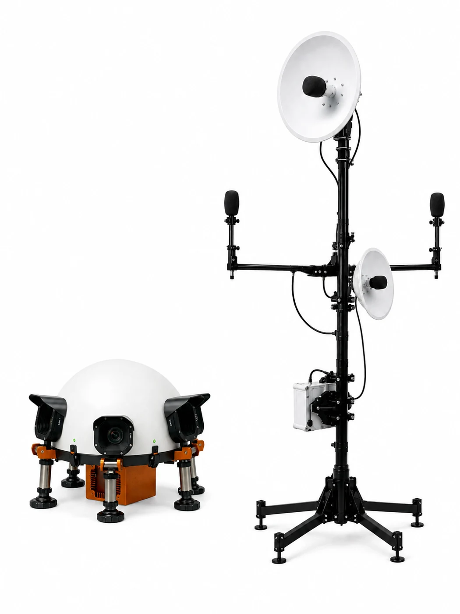
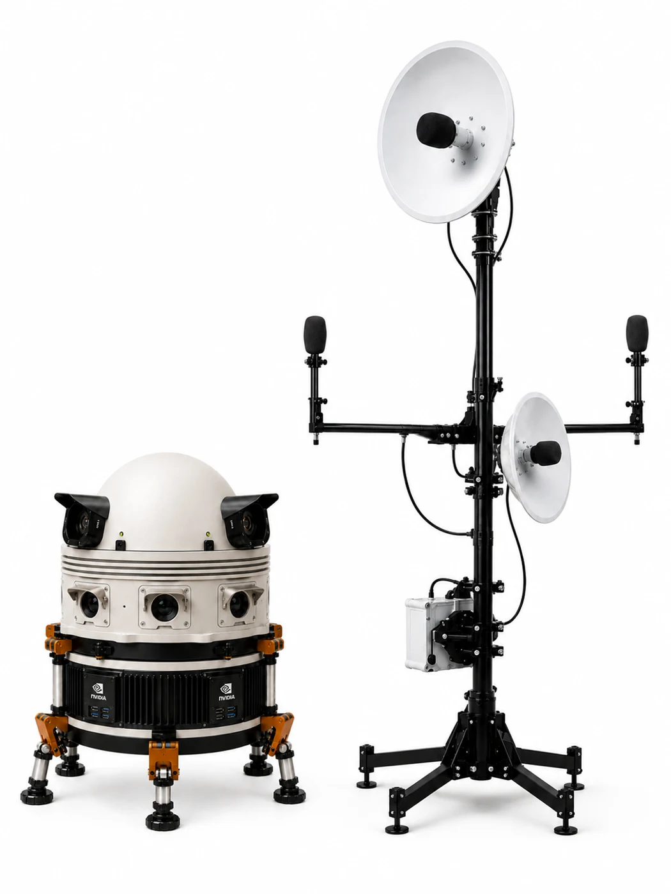
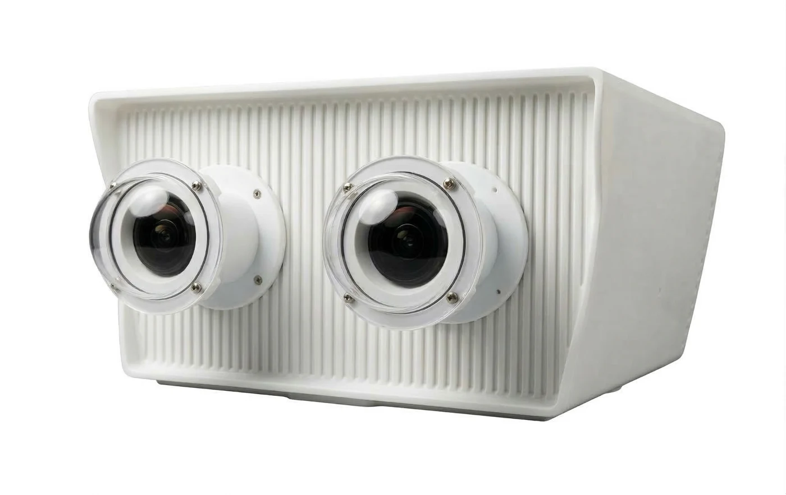
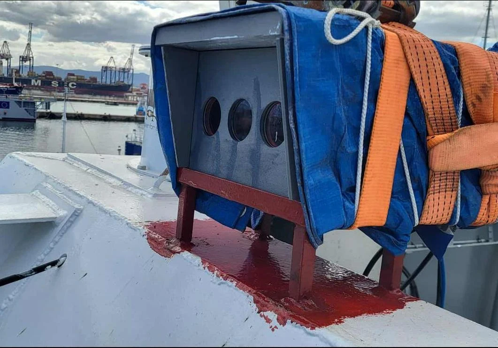

Cameras & sensors
Imaging, position, motion, ranging, and environmental measurements.
Cameras, sensors & systems
Choose camera and sensor options, explore integrated field systems, and define a configuration around your operating environment.

Imaging, position, motion, ranging, and environmental measurements.
Field hardware and modular system concepts, with development status identified.
Camera, lens, mounting, processing, and integration requirements scoped together.
Full hardware list
Our camera and sensor options are grouped by the information they provide. Component choices, availability, and integration are confirmed for each configuration.
Cameras
Position & motion
Airspace & distance
Environment
Specialized marine & research
02 / Hardware configurations
NEXT-GENERATION CONCEPTS / EXISTING FIELD HARDWAREOptical hardware and edge compute, with a modular path forward.
Configurations below distinguish existing field hardware from the next-generation systems in development.
A multi-camera pod and mast-mounted sensing array, exploring a wider combination of visual, infrared, and acoustic inputs.

An alternative camera-pod and mast-array configuration for persistent site observation, combining multiple sensing perspectives.

Dual-lens optical hardware used in vessel-mounted fieldwork. A starting point for maritime observation and recorded evaluation.

An enclosed onboard processing system, with NVIDIA hardware used in the project’s perception and tracking development.
Onboard processing
Our NVIDIA-based development brings camera input, recording, and perception into the same engineering workflow. Maritime field systems provide experience with enclosures, mounting, and onboard compute.
For each pilot, we define what needs to run onboard, what is retained for review, and how observations should reach the operator. Interfaces and processing capacity are scoped for that system.
Explore the software & platformConfigure around your requirements
Bring us the objects, scene conditions, mounting constraints, and information your team needs.